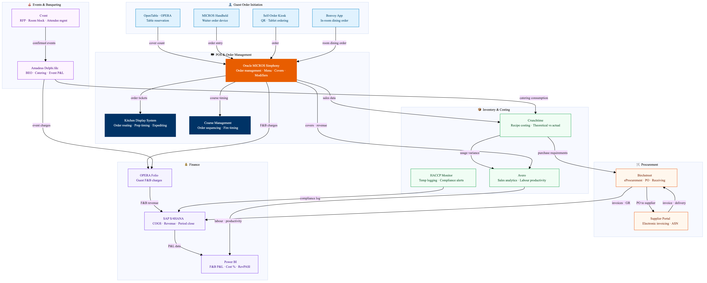

This diagram maps the full Marriott F&B technology stack from guest order to financial close. Oracle MICROS Simphony POS is the operational hub capturing orders, routing to kitchen display systems, and posting charges directly to OPERA guest folios. Amadeus Delphi.fdc manages banqueting and events with BEO generation and catering charges. Inventory flows through Crunchtime for recipe costing and waste tracking, feeding purchase requirements to Birchstreet procurement. All costs and revenues ultimately consolidate in SAP S/4HANA for period-end financial reporting.